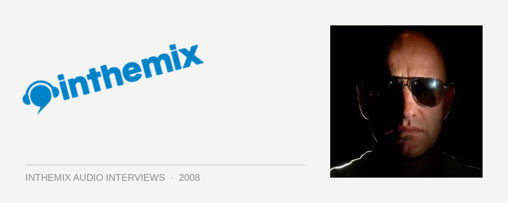

Rennie Pilgrim [Audio]: Militant breakbeat hero
STREAMING AUDIO INTERVIEWS
While the breakbeat scene as a whole is arguably going from bad to worse, if all you’d been listening to was the slammin’ sets of UK stalwart Rennie Pilgrim, then you’d never even have known. That’s because Rennie just keeps going from good, to even better. And with his new artist album Skin just around the corner, inspired by his forays into live performances with the TCR Allstars, he’ll be swooping back down into the once breakbeat-strong fortress of Australia once again.
“Breaks at the moment is not leading, it’s following,” the Godfather of Breaks himself told ITM. “If you go to a breaks club, you’re unlikely to hear real breakbeat, it’s the same as it was when I toured a year ago and probably even worse. Where you’re not really hearing what the music is, what you’re hearing is something that’s almost house. I don’t think that’s what the people who go to those nights want, I think it’s just a confidence thing with producers.”
And according to the Godfather, the problem can be traced back to the fact that so many producers are forgetting what it is that differentiates breakbeat from house in the first place. “The difference between what I do and what a house guy does is that I use different rhythms. That’s the main difference, and the idea that it’s turned into ‘not quite house music’, it’s not what I think people want.”
While the breakbeat scene at the moment may be in dire straits, there’s more demand than ever for what Rennie Pilgrim is going. that’s because he does it right, he does it heavy and he plays breakbeat the way that it was meant to be played. ITM’s Angus Paterson talks to the Godfather about the future of the breaks scene.
Rennie Pilgrim will be playing the following shows around the country…
Friday July 18 – Freshly Breaked @ Halo, Hobart
Saturday July 19 – Yo Play @ Birdie Num Num, Brisbane
Saturday July 19 – Club Club @ Chinese Laundry, Sydney
Thursday July 24 – La La Land, Byron Bay
Friday July 25 – Brown Alley, Melbourne
Saturday July 26 – Major Break 5 @ Gilkison’s Dance Studio, Perth
And check out these clips of the TCR Allstars doing their thing. Hopefully we’ll get them down here in Australia before too long…